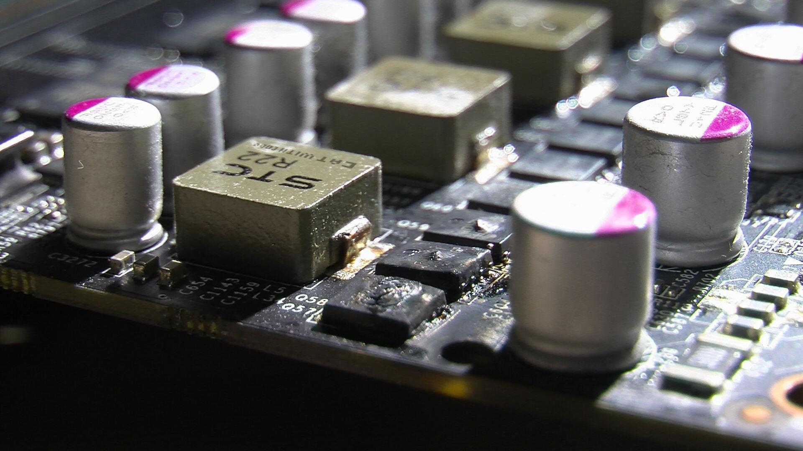
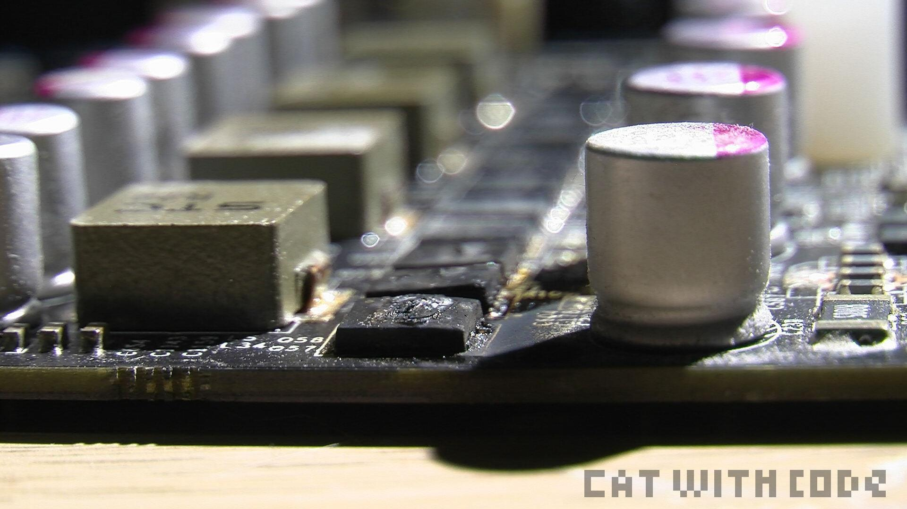
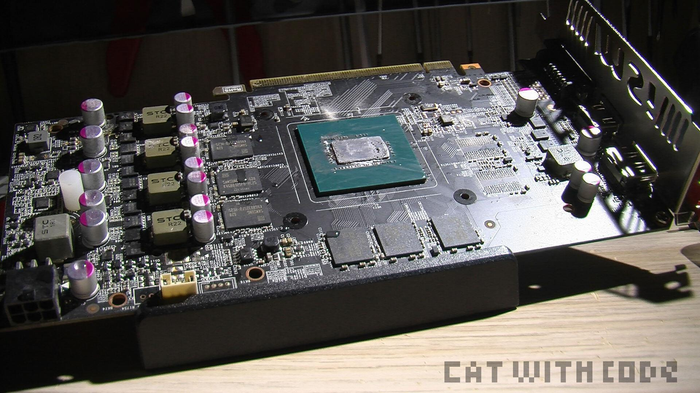
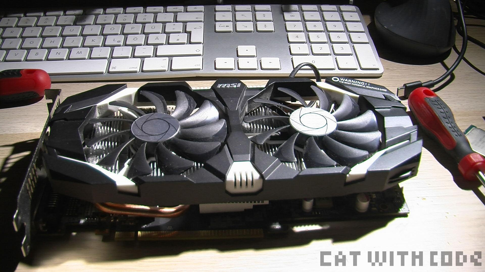

I have a test PC build of old PC part. Stuff that I either no longer trusted or were just old low power stuff no one wants or needs. In it is, or better was, a MSI GTX 1060 OC 6GB or something like that.
I'm sure the cause here was the powersupply. It was a beQuiet! STRAIGHT POWER 11. It already overheated three times in the past. After the first time where it was production use, we replaced it immediately. Power-supply's are something I don't toy around with. If it is the cause for a fail at any point it gets replaced immediately! After being replaced in the production PC it was relegated to the trash PC because it still worked. Here is important, I have a rules with Testing and Trash-PC's (This counts for EVERY PC I do not trust):
Well. The rules worked out again. While benchmarking the PC turned off and did not want to power on again. I counted this as dead and disconnected it and did something else. After 10 minutes I smelled something and saw the green power light on the PC. It SOMEHOW powered on (probably rest power in the capacitor). I was REALLY confused and looked closer and on the mainboard where I thought I saw a yellow light, no, it was fire. I took a glass of water and bathed it. After that I throw it on the floor and garbed the fire distinguisher but it was THANKFULLY already off.
So much for that LOL. I'm really sure neither the MSI or beQuiet is to blame here. The GPU was over 12 years or so old and used for over 10 daily at least. And the powersupply itself was already flagged for me as as unreliable or faulty. So no blame to anyone. Just something I wanted to document. Also not the first time a GPU tried to turn into magic smoke for me, but last time it was my fault LOL:
/Blog/2022.10.02_BIOS-Mod_Gigabyte-GTX-1080-G1-Gaming/BIOS-Mod_Gigabyte-GTX-1080-G1-Gaming.html

